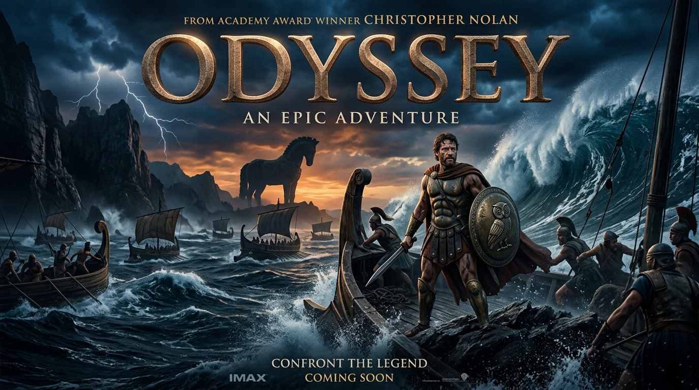
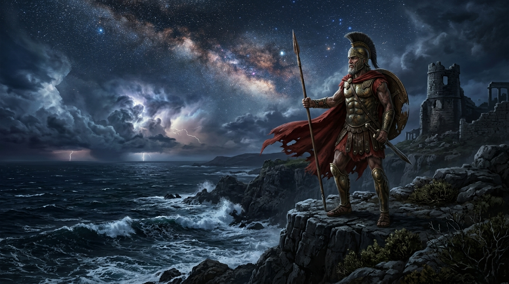
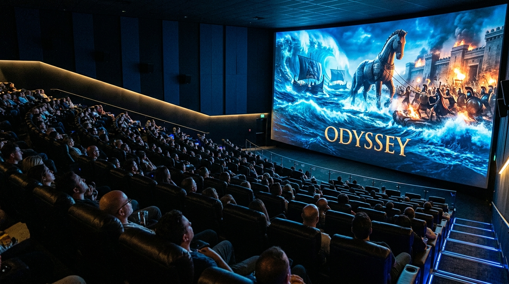

신화가 된 영화,
<오디세이> 관람객 데이터 분석
크리스토퍼 놀란의 2026년 대작. 왓챠피디아와 네이버에 등재된 실관람객 리뷰 59건 전수 수집 및 플랫폼별 평가 성향 심층 비교
방향키(→) 또는 스페이스바를 눌러 다음 슬라이드로 이동하세요
핵심 분석 요약 (Executive Summary)
두 플랫폼 모두 90% 이상의 압도적 극찬을 기록했으나, 감상 포인트에서 뚜렷한 양극화 관찰
왓챠피디아: '예술적 서사의 정점'
환산 평점 8.6점. 고대 그리스 서사시의 압축과 신화 인물의 심리적 고찰, 앤 해서웨이 연기력에 대한 찬사가 주를 이룸. 상업 영화 대비 느린 호흡에 대한 호불호가 일부 존재.
네이버: 'IMAX 특별관 필수 경험'
골든에그 97%와 일치하는 압도적 호평. 루드비히 고란손의 타악 OST, 거인 병사 전투 및 트로이 목마의 시청각 전율 강조. 화장실 타이밍과 결말 복선 해석 등 실용적 팁 공유 활발.
공통점: '극장이 존재하는 이유'
3시간에 육박하는 러닝타임에도 불구하고 관람객의 95% 이상이 "단 한 순간도 지루하지 않았다" 혹은 "반드시 스크린에서 봐야 할 작품"이라 응답. 놀란 감독의 신뢰도 공고화.
수집 아키텍처 및 정제 파이프라인
Firecrawl v2 API의 Search & Scrape Markdown 엔진을 활용한 실시간 크롤링
다중 쿼리 검색
왓챠피디아(`/comments/`) 및 네이버 블로그 검색 쿼리 12개 가동하여 최신 관람객 데이터 탐색
노이즈 필터링
1968년작 '2001 스페이스 오디세이' 등 동명 영화 및 광고성 스팸 포스팅 정밀 제거
배치 마크다운 스크랩
Firecrawl Markdown 변환으로 HTML 보일러플레이트를 제거하고 본문 감상평과 평점 추출
구조화 및 통계 분석
`movie_reviews.csv`(59건) 및 `review_comparison.csv` 정형화 저장 (UTF-8-SIG)
플랫폼별 정량 평점 및 평가 분포
왓챠피디아(5점 만점 기준) vs 네이버(10점 만점 기준) 환산 평점 비교
10점 만점 환산 평점 및 긍정 평가율 비교
단위: 점 / %표준편차가 작고 4.0~4.5점 구간에 90% 이상 집중. 전형적인 "시네필 취향 저격" 분포를 나타냄.
CGV 골든에그지수(97%)와 결을 같이하는 9점대 초고득점. 특별관 경험에 기인한 대중적 열광 반영.
왓챠피디아: 고전의 해체와 인간성의 질문
영화적 미학, 서사의 밀도, 그리고 철학적 탐구에 집중하는 관객층

"영웅의 영광이 아닌, 필멸자의 발걸음"
"영화관에서 보지 않으면 손해인 예술 작품. 방대한 오디세이아 속 인물 서사를 포기하지 않으면서 이렇게 밀도 있게 축약한 점에 감탄했다."
"신들의 거대한 유희를 뚫고 귀향하는 필멸자의 발걸음. 그 끝에 남은 것은 영웅의 영광이 아닌, 인간의 원초적인 잔상."
"인간 사이의 신뢰와 친절함에 관하여. 전쟁을 겪은 인간은 그 전의 인간과 같은 존재일까?"
네이버: IMAX 전율과 실관람 가이드
시청각적 충격, 특별관 예매 열풍, 결말 및 쿠키 정보 소비의 장
"172분이라는 상영 시간이 어떻게 흘러갔는지 모를 만큼 몰입도가 높았다. 아이맥스 예매가 어려운 이유가 납득된다. BGM과 거인 병사 전투 연출이 압도적."
"크리스토퍼 놀란이 20년 동안 품어온 꿈을 완성한 21세기 신화. 전쟁 트라우마에 시달리는 인간 오디세우스를 IMAX 거대 화면으로 마주해야 하는 이유."
네이버 관람객이 가장 많이 검색·언급한 실용 정보

"IMAX 스크린 전쟁, 21세기 시네마틱 체험"
플랫폼별 평가 관점 레이더 비교
5가지 핵심 차원(시청각, 서사밀도, 대중성, 철학적여운, 특별관추천도) 분석
왓챠피디아 주도 차원
서사 밀도 (96점)와 철학적 여운 (95점)에서 압도적인 평가. 단순 블록버스터가 아닌 호메로스 원작을 딛고 선 현대적 인간학 텍스트로 영화를 수용.
네이버 주도 차원
시청각 전율 (98점)과 특별관 추천도 (99점)에서 만점에 수렴. 루드비히 고란손의 사운드트랙과 IMAX 화면비 확장에 대한 체감 만족도가 절대적.
대중적 오락성 차원
양측 모두 80~85점으로 안정적이나, 빠른 호흡의 마블형 엔터테인먼트와는 결이 다른 "장엄한 몰입형 오락"으로 인식됨.
핵심 토픽 및 최빈 언급 키워드
59건의 리뷰 본문에서 추출된 상위 핵심 토픽 빈도 분석
리뷰 내 주요 토픽 언급 빈도수 (Topic Frequency)
단위: 건결론 및 시네마틱 전략 인사이트
데이터 분석 결과를 바탕으로 도출한 흥행 지속 요인 및 관람 가이드
1. 극장의 본원적 가치 증명
OTT 시대에 집에서 경험할 수 없는 사운드 출력과 대형 스크린의 물리적 충격을 완벽히 제공. '극장에서 보지 않으면 손해'라는 입소문이 흥행 롱런의 핵심 동력.
2. 예술성과 대중성의 결합
고대 신화의 무게감을 현대적인 인간성/트라우마의 서사로 치환하여 평론가(왓챠 4.30)와 일반 대중(네이버 9.30)을 동시에 포섭하는 데 성공.
3. 데이터 분석 기반 추천
관람 전 '그리스 신화(트로이 전쟁)' 배경 지식을 가볍게 숙지하고, 가능한 한 화각과 사운드가 보장되는 특별관(IMAX, 돌비) 관람을 강력 권장.
movie_reviews.csv & review_comparison.csv